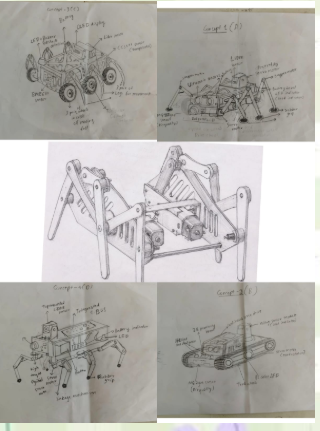

Establishing system functions, building the function tree, mapping the morphological chart, and generating four distinct design concepts for the Insectronics ladybug model.
• Establishing Functions
• Function Tree
• Morphological Chart
• Concept Sketches
• Conceptual Designs Table
Activity 1 — mapping what the system must do from both the user's and the designer's viewpoint.
| No. | Functions from User Perspective | Functions from Designer Perspective |
|---|---|---|
| 1 | Move forward automatically | Program Arduino for forward motion control |
| 2 | Turn left or right when obstacle is detected | Implement obstacle detection algorithm |
| 3 | Detect obstacles in front | Indicates distance of the objects |
| 4 | Show object detection using red/green LED | Design LED indicator circuit and logic |
| 5 | Provide visual status feedback to the user | Indicates air quality |
| 6 | Measure room temperature | Show battery level using LED indicator |
| 7 | Indicate nearby objects | Process ultrasonic sensor data |
| 8 | — | Control servo motor for sensor rotation |
| 9 | — | Implement battery monitoring circuit |
| 10 | — | Rotate head/sensor to scan surroundings |
The Ladybug Insectronics Model is structured around three primary functional branches.
Activity 3 — for each subfunction, four alternative means of achieving it are explored and compared.
| S.No | Subfunction | Means 1 | Means 2 | Means 3 | Means 4 |
|---|---|---|---|---|---|
| 1 | Move / Walk forward | Wheels + DC motor | Continuous servo | Gear motor | Track wheels |
| 2 | Turn left or right (after obstacle detection) | Differential wheel control | Servo steering | Dual DC motors | Stepper motor control |
| 3 | Obstacle detection | Ultrasonic sensor | IR proximity sensor | Lidar sensor | Bumper switch |
| 4 | Air quality sensing | Ultrasonic sensor | MQ2 gas sensor | CCS811 air quality sensor | BME680 sensor |
| 5 | Temperature sensing | MQ135 gas sensor | MQ2 gas sensor | CCS811 air quality sensor | BME680 sensor |
| 6 | Distance measurement | Ultrasonic sensor | IR distance sensor | ToF sensor | Lidar sensor |
| 7 | LED status indication for object detection (Red/Green LED) | Red–Green LED pair | Bi-color LED | RGB LED | LED + buzzer |
| 8 | Head rotation / indication (LED indicator) | Battery level LED indicator | Voltage sensor module | LED bar graph | OLED display |
| 9 | Head rotation / sensor control | Servo motor | Mini stepper motor | Pan-tilt servo mount | DC geared motor |
Four design concepts were sketched and explored — each taking a distinct approach to the Insectronics challenge.
Articulated legged robot inspired by the ladybug form. Uses LiDAR + ultrasonic sensors, servo motors for leg movement, MQ135 gas sensor for air quality, battery level LED indicator, red/green LEDs, and rubber grip feet.
→ Selected Design (Pugh Score: 53)
Tracked tank-style vehicle for robust terrain navigation. Uses continuous servo drive, servo steering, IR proximity sensor, MQ2 gas sensor, BME680 environment sensor, bi-color LED, voltage sensor module.
Wheeled rover/buggy design with an OLED display and gear motor drive. Features CCS811 air quality sensor, RGB LED, LED bar graph for battery, LiDAR sensor, and 4-wheel movement.
Quadruped robot with leg linkage mechanism, integrated bus architecture, LiDAR + IR sensors, stepper/servo motors, BME680 environment sensor, and rubber grip feet with battery LED indicator.

A side-by-side breakdown of which components each concept uses for every subfunction.
| S.No | Subfunction | Concept 1 | Concept 2 | Concept 3 | Concept 4 |
|---|---|---|---|---|---|
| 1 | Move / Walk forward | Wheels + DC motor | Continuous servo drive | Gear motor drive | Wheels + DC motor |
| 2 | Turn left/right (after obstacle detection) | Servo motor | Servo steering mechanism | Dual DC motor control | Differential speed control of DC motors |
| 3 | Obstacle detection | Ultrasonic sensors | IR proximity sensor | LiDAR sensor | IR distance sensor |
| 4 | Air quality sensing | MQ135 gas sensor | MQ2 gas sensor | CCS811 air quality sensor | MQ 135 |
| 5 | Temperature sensing | BME680 sensor | BME680 sensor | BME680 sensor | DHT 11 |
| 6 | Distance measurement | Ultrasonic sensors | IR distance sensing | ToF / LiDAR sensor | IR distance sensor |
| 7 | LED status indication (object detection) | Red–Green LED | Bi-color LED | RGB LED | Red or green LED |
| 8 | Battery level indication (LED) | Battery level LED Indicator | Voltage sensor module | LED bar graph | Red or green LED |
| 9 | Head rotation / sensor direction control | Servo motor | Servo motor | Servo motor | Servo motor |